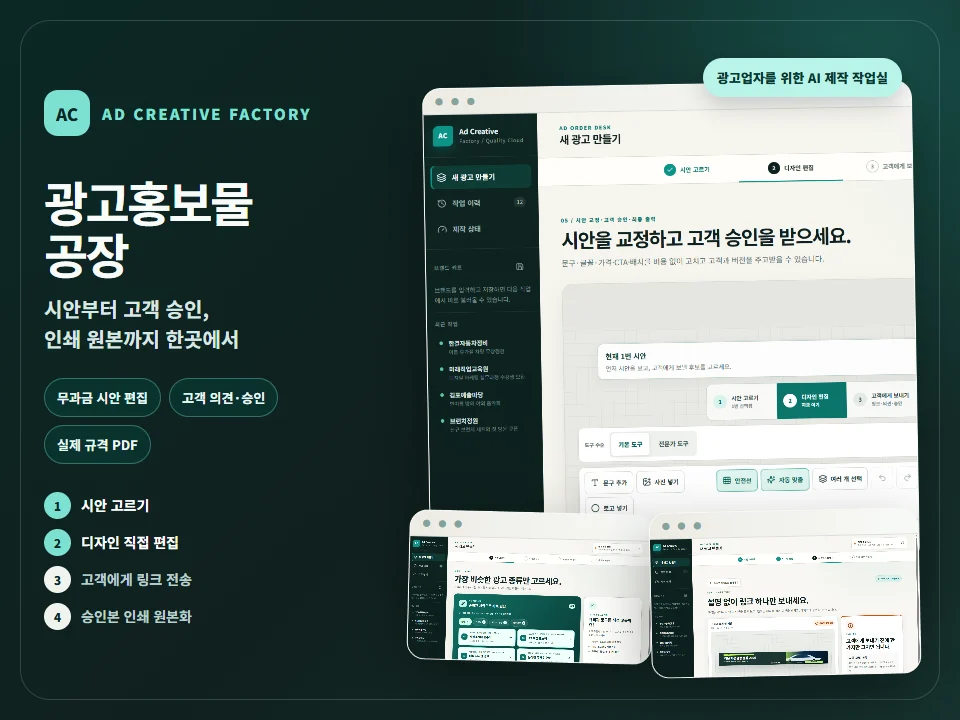

Pillar 03 · Digital Project Studio
디지털 프로젝트 스튜디오
앱 · 웹 · 게임 · 홍보물
아이디어를 작동하는 결과물로 만듭니다.

출시 준비 · 광고 제작광고홍보물공장시안부터 고객 승인·인쇄 원본까지현수막·포스터·전단·매장 광고를 실제 규격으로 주문하고, 준비된 시안을 직접 편집해 고객과 링크로 의견·승인을 주고받은 뒤 인쇄용 PDF로 완성하는 광고업자 전용 제작 작업실입니다. 문구·글꼴·배치 수정은 이미지 생성 없이 진행하고, 새 사진·일러스트가 필요할 때만 비용을 먼저 확인합니다.광고홍보물공장 살펴보기 → 개발 중 · 체험학습오늘어디가역사 탐색 · 가족 여행 · 체험 보고서1분 체험 시작 →
개발 중 · 체험학습오늘어디가역사 탐색 · 가족 여행 · 체험 보고서1분 체험 시작 →
 비공개 실증 중 · 프로필Fast Profile생활 사진 한 장 → 증명·상반신 프로필포털에서 살펴보기 →
비공개 실증 중 · 프로필Fast Profile생활 사진 한 장 → 증명·상반신 프로필포털에서 살펴보기 →
 기획 · 제작 · 가족미오베라 모험동화사진으로 만드는 우리 아이 이야기웹 체험 시작 →
기획 · 제작 · 가족미오베라 모험동화사진으로 만드는 우리 아이 이야기웹 체험 시작 →
 Google Play 정식 출시 · 게임 앱버블 노바 스타별자리 · 타일 매치 · 휴식출시 게임 살펴보기 →
Google Play 정식 출시 · 게임 앱버블 노바 스타별자리 · 타일 매치 · 휴식출시 게임 살펴보기 →
 운영 지원 · 기관 웹홈페이지 제작 · 운영정보구조 · 반응형 화면 · 유지관리제작 방식과 사례 보기 →
운영 지원 · 기관 웹홈페이지 제작 · 운영정보구조 · 반응형 화면 · 유지관리제작 방식과 사례 보기 →
기획교육 현장의 문제 정의
제작앱·웹·홍보물 구현
검증기기·언어·사용 흐름 점검
운영출시 이후 개선과 지원
작은 아이디어도 서비스가 됩니다.
교육·콘텐츠·기관 운영 협업